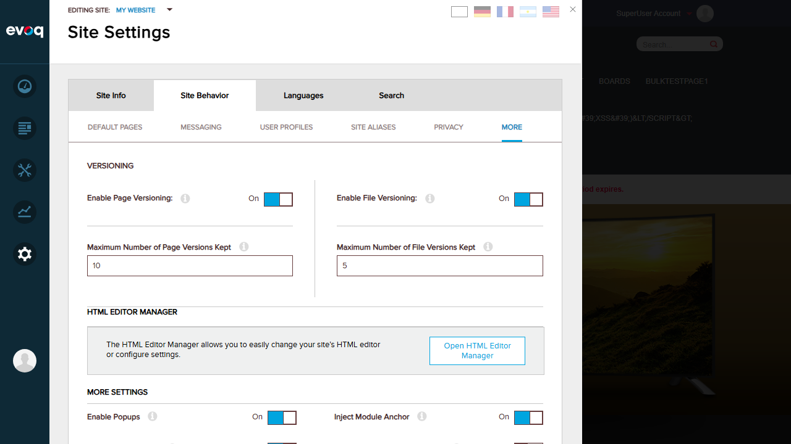
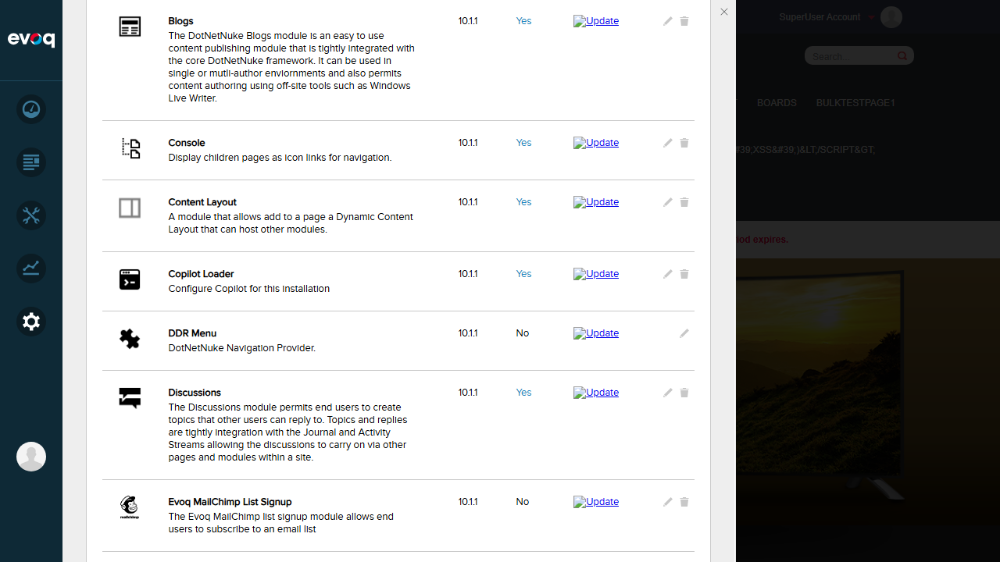

The specified UI location "Admin > Site Settings > Migration Tool" does not exist.
After thorough investigation of both the UI and source code, it was determined that the Content Layout Migration feature is an automatic backend process that runs during module upgrade, not a manual UI tool.
The migration code is triggered automatically when the Content Layout module is upgraded to version 08.02.00 via the IUpgradeable interface implementation in BusinessController.cs.
0
Tests Passed
0
Tests Failed
7
Not Testable (No UI)
Feature Description
Expected: Migrates legacy Content Layout instances from Evoq 8.x to the new module-based architecture.
Expected UI Location: Admin > Site Settings > Migration Tool
Actual Finding: No Migration Tool UI exists. The migration is automatic.
Code Analysis
The following files were analyzed to understand the migration feature:
File
Purpose
ContentLayoutMigrationController.cs
Main controller orchestrating the migration process
IUpgradeable implementation that triggers migration
Key Code Finding (BusinessController.cs):
public string UpgradeModule(string version)
{
switch (version)
{
case "08.02.00":
{
MigrateContentLayoutToModule();
message += "Migrated Dynamic Content Layouts to Dynamic Content Layout Modules";
break;
}
}
}
private void MigrateContentLayoutToModule()
{
if (!_contentLayoutMigrationController.IsMigrationApplicable())
return;
foreach (PortalInfo portal in _portalController.GetPortals())
{
_contentLayoutMigrationController.MigrateContentLayouts(portal.PortalID);
}
}
UI Investigation
Steps Taken:
Logged in as SuperUser (host)
Navigated to Settings > Site Settings
Checked all tabs: Site Info, Site Behavior, Languages, Search
Checked Site Behavior sub-tabs: Default Pages, Messaging, User Profiles, Site Aliases, Privacy, More
Searched for "Migration" in all Settings areas
Verified Content Layout module is installed in Extensions
Result: No Migration Tool UI was found anywhere in the admin interface.
Screenshot: Login Confirmation
Screenshot: Site Settings - More Tab (Versioning)

Screenshot: Extensions List
Screenshot: Content Layout Module Verified

Test Scenarios - Assessment
Scenario
Status
Reason
Detect legacy content layouts
NOT TESTABLE
No UI available - automatic backend process
Migrate single content layout
NOT TESTABLE
No UI available - automatic backend process
Migrate multiple layouts on same page
NOT TESTABLE
No UI available - automatic backend process
Handle migration errors gracefully
NOT TESTABLE
No UI available - automatic backend process
Preserve module permissions during migration
NOT TESTABLE
No UI available - automatic backend process
Update pane names after migration
NOT TESTABLE
No UI available - automatic backend process
Verify tab versioning state preservation
NOT TESTABLE
No UI available - automatic backend process
Verified: Content Layout Module Installation
While the Migration Tool UI does not exist, we verified that the Content Layout module is properly installed:
Property
Value
Module Name
Content Layout
Version
10.1.1
In Use
Yes
Description
A module that allows add to a page a Dynamic Content Layout that can host other modules.
Status:PASS - Module is installed and in use
Observations
No Migration Tool UI: The specified UI location "Admin > Site Settings > Migration Tool" does not exist in the Evoq interface. The feature description appears to be inaccurate.
Automatic Migration Process: Code analysis reveals that the Content Layout Migration is triggered automatically during module upgrade via the IUpgradeable interface when upgrading to version 08.02.00.
Migration Logic (from code):
Checks if legacy ContentLayouts table exists via IsMigrationApplicable()
Groups legacy layouts by TabId
Temporarily disables tab versioning and workflow during migration
Creates new Content Layout module instances for each legacy layout
Preserves column sizes and updates pane names
Re-enables versioning and workflow after migration
Marks each layout as migrated in the database
Dependencies Verified: The migration code correctly handles Tab Versioning and Module System dependencies as specified.
Content Layout Module Functional: The Content Layout module (v10.1.1) is installed and marked as "In Use", indicating the migration (if applicable) has already completed successfully for this installation.
Recommendation: To test this feature, one would need:
An Evoq 8.x installation with legacy Content Layout data
Upgrade the installation to trigger the automatic migration
Verify results via database queries or page inspection
Conclusion
The Content Layout Migration feature cannot be tested via UI because no Migration Tool UI exists at the specified location. The feature is implemented as an automatic backend migration that runs during module upgrade.
The test scenarios listed cannot be executed through UI interaction as originally specified. Testing this feature would require a controlled upgrade scenario with legacy data, not a manual UI tool.
Feature Implementation Status: The code exists and appears properly implemented, but it is a one-time automatic migration, not a manually-triggered tool.